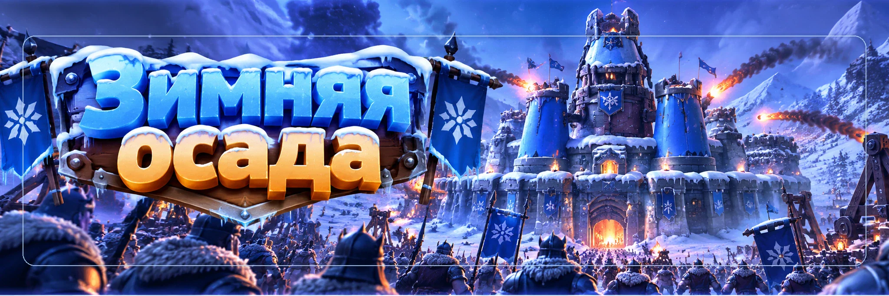

Зимняя осада
Зимняя осада — сезонное PvP-событие альянсов, где заранее выставляют гарнизоны и атакуют крепости противника.
Главная цель: сохранить свои звёзды и снять как можно больше звёзд соперника.
🪖 Каждый участник готовит 2 гарнизонных отряда.
⭐ Звёзды дают итоговый результат.
❤️ Проигранная защита снимает сердце.
💪 Серия побед снижает боевой дух защитника.
👑 Сильные отряды лучше заранее назначать хранителями.
🎯 Кто участвует
Для участия игроку нужен минимум 25 уровень топки.
Перед боем альянс заранее формирует состав и распределяет игроков по крепостям.
🪖 Два отряда
Каждый участник готовит 2 отряда.
Обычно один оставляют в защите, а второй используют для атак.
Гарнизон продолжает защищать крепость даже если игрок офлайн.
⭐ Звёзды
Крепость получает звёзды от гарнизонов.
Чем больше сильных отрядов осталось в защите, тем больше звёзд сохраняет альянс.
Победа строится вокруг звёзд, а не количества случайных PvP-побед.
❤️ Сердца
У каждого гарнизона есть запас сердец.
Сердца менялись между обновлениями. В раннем варианте обычный отряд имел 4 сердца, хранитель — 5. В материалах после обновления октября 2026 года указаны 5 сердец обычного гарнизона и 6 у хранителя. Для RU проверяйте текущие значения в окне события перед распределением атак.
Проигранная защита снимает сердце. Когда сердца заканчиваются, гарнизон выбывает и его звёзды исчезают.
👑 Хранитель
R4/R5 могут назначить сильный отряд хранителем крепости.
Такой гарнизон получает дополнительную прочность, поэтому лучших хранителей выгоднее распределять между важными позициями заранее.
💪 Боевой дух
После серии побед боевой дух защитника постепенно снижается. В октябре 2026 года разработчики изменяли скорость этого снижения; прежние таблицы могут быть устаревшими.
В опубликованных правилах минимальное значение составляет 60%. После потери сердца боевой дух восстанавливается до 100%. Текущую формулу для RU сверяйте в правилах события.
⚔️ Как атаковать
Не бьём крепость всем подряд.
Перед атакой смотрим:
- ⭐ сколько там звёзд;
- ❤️ сколько сердец осталось;
- 💪 насколько просел боевой дух;
- 🦸 насколько силён гарнизон.
Иногда выгоднее сначала ослабить защитника, а потом добить сильным отрядом.
🎯 Попытки атак
Количество атак ограничено и постепенно восстанавливается.
Не тратим их на слишком сильную или маловажную цель.
Лучше заранее распределить цели и добивать уже ослабленные гарнизоны.
🛡️ Защита
Не складываем всех сильнейших игроков в одну крепость.
Если остальные позиции останутся пустыми, соперник быстро снимет там звёзды.
Распределяем хранителей и сильные гарнизоны между важными точками.
💬 Опыт игроков
- ✅ Готовим оба отряда заранее.
- ✅ Хранителей назначаем до боя.
- ✅ Смотрим не только на силу, но и на сердца и боевой дух.
- ✅ Не тратим атаки хаотично.
- ✅ Ослабленный гарнизон часто выгоднее добить, чем начинать новую крепость.
- ✅ Звёзды важнее личной статистики.
🚫 Частые ошибки
- ❌ собирать гарнизоны в последний момент;
- ❌ всех сильных поставить в одну крепость;
- ❌ атаковать случайные цели;
- ❌ игнорировать сердца;
- ❌ не учитывать падение боевого духа;
- ❌ потратить все попытки слишком рано.
✅ Быстрая схема
🪖 2 отряда → 👑 хранители → ⭐ защита → 👀 слабая цель → ⚔️ атака → ❤️ снимаем сердца → ⭐ забираем звёзды.
Главное: Зимняя осада выигрывается распределением сил. Сохраняем свои звёзды и тратим атаки только там, где они действительно дадут результат.